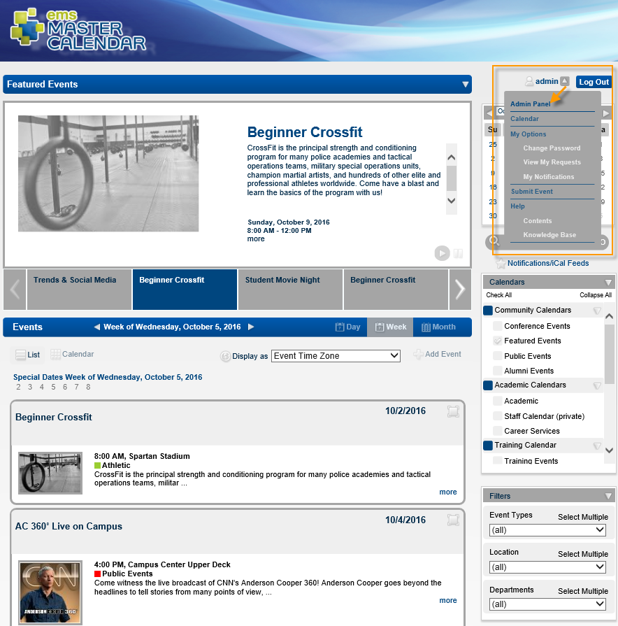
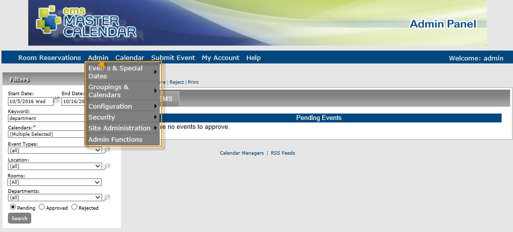
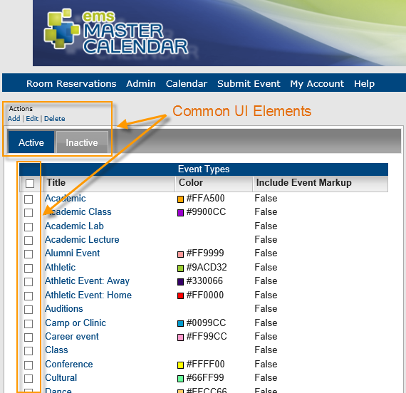

EMS Master Calendar has a special Admin Panel for system administration. The EMS Master Calendar Admin Panel controls system behavior for EMS Master Calendar. The Admin menu points to many of the settings you will work with during administration and setup.

The Admin dropdown is organized into the following sections:

On many of the pages that you can access from this Admin menu, you will encounter a list view of predefined settings with basic Add, Edit, Delete options and Active/Inactive list tabs.
